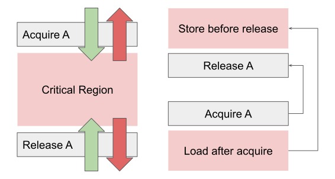
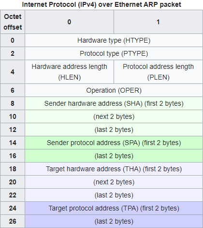
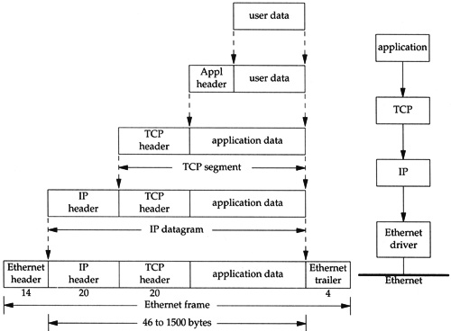
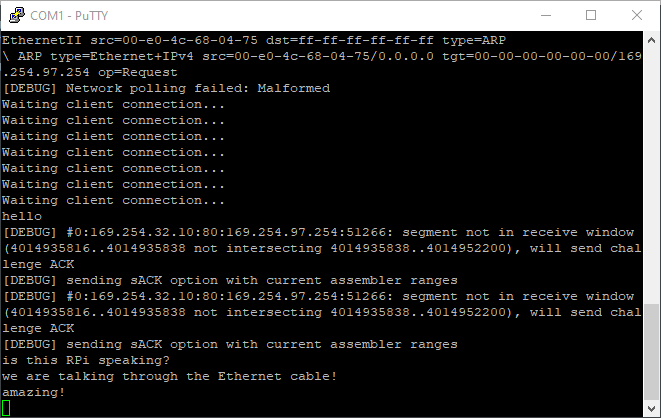
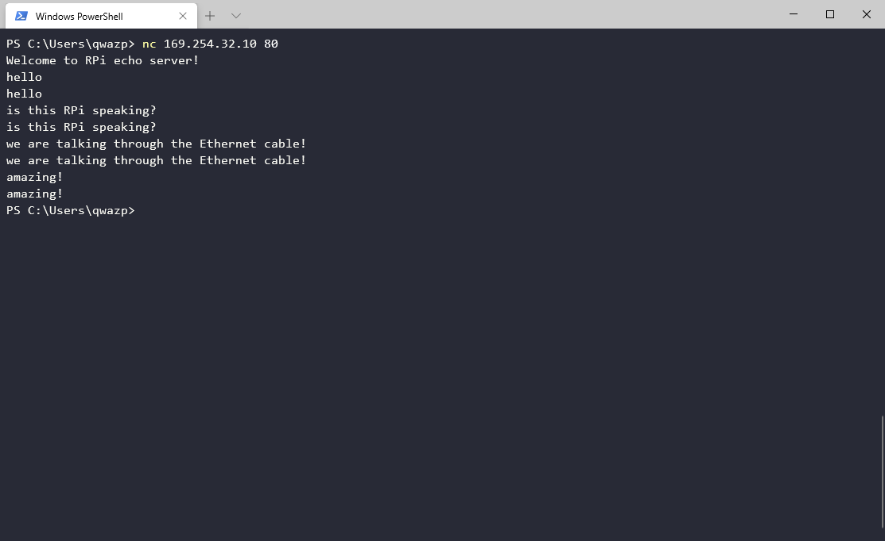

Lab 5: Multicore and Networking¶
Handed out: Tuesday, April 14, 2020
Due: Friday, May 1, 2020
Introduction¶
So far, our kernel has utilized only one core among four cores on a RPi board. In this assignment, you will enable the other three cores and adjust the existing components to correctly run programs in parallel. After that, you will integrate an existing Ethernet implementation for RPi (USPi) and a minimal TCP stack (smoltcp) to our kernel, so that our host computer and the Raspberry Pi board can communicate via an Ethernet cable. Finally, you will write an echo server as a user program on our kernel and interact with that server from your host computer with netcat command.
Phase 0: Getting Started¶
Fetch the update for lab 5 from our git repository to your development machine.
$ git fetch skeleton
$ git merge skeleton/lab5
This is the directory structure of our repository. The directories you will be working on this assignment are marked with *.
.
├── bin : common binaries/utilities
├── doc : reference documents
├── ext : external files (e.g., resources for testing)
├── tut : tutorial/practices
│ ├── 0-rustlings
│ ├── 1-blinky
│ ├── 2-shell
│ ├── 3-fs
│ ├── 4-spawn
│ └── 5-multicore : questions for lab5 *
├── boot : bootloader
├── kern : the main os kernel *
├── lib : required libraries
│ ├── aarch *
│ ├── kernel_api *
│ ├── fat32
│ ├── pi *
│ ├── shim
│ ├── stack-vec
│ ├── ttywrite
│ ├── volatile
│ └── xmodem
└── user : user level program *
├── fib
├── sleep
└── socket *
Merge Guideline¶
You may need to resolve conflicts before continuing. For example, if you see a message that looks like:
Auto-merging kern/src/main.rs
CONFLICT (content): Merge conflict in kern/src/main.rs
Automatic merge failed; fix conflicts and then commit the result.
You will need to manually modify the main.rs file to resolve
the conflict. Ensure you keep all of your changes from lab 4.
Once all conflicts are resolved, add the resolved files with
git add and commit. For more information on resolving merge
conflicts, see this tutorial on
githowto.com.
Various design has been changed from lab 4. See the following summary of change for a merge guideline.
Safe / Unsafe changes
Several safe / unsafe definitions have been changed to conform better with Rust’s safety guarantee. If there is a merge conflict in this regard, follow the updated definition.
Scheduler
GlobalScheduler now uses
Boxin the definition. UpdateScheduler::new()function accordingly.Move timer manipulation from
start()toinitialize_global_timer_interrupt()method. Call this function inGlobalScheduler::start().
PageTable
The value of
IO_BASE_ENDhas been increased to allow the kernel to access the local timer address. To support that, the kernel page table now uses three L3 entries instead of two. Adjust related functions inkern/src/vm/pagetable.rs.VMM
VMM includes more fields than before. Calculate the base address of the kernel table in
initialize(), and save it tokern_pt_addrfield withself.kern_pt_addr.store(kern_pt_addr, Ordering::Relaxed);. You will learn what this line means throughout this lab.In addition,
setup()is not called automatically ininitialize()anymore. This is to separate the behavior of initializing the virtual memory manager and setting up the MMU for the current core, so that they can be invoked independently with multiple cores. You have to addVMM.setup()call inkmain(), right afterVMM.initialize().IRQ / Traps
IRQ has been redesigned to use trait-based logic. Read the change in
kern/src/traps/irq.rs. Update theregister()andinvoke()function, and alsohandle_exception()as necessary.write_strsyscallIn the previous lab, there was only a
write()syscall which prints a single byte to the serial. We have addedwrite_str()syscall, which takes a slice from the user and prints it atomically.kernel_apilibrary has been updated to use this; Recompile your user programs and copy them to the SD card.
Logging infrastructure¶
Our kernel code now uses Rust’s log crate instead of kprintln! for message logging.
It enables five logging macros trace!, debug!, info!, warn!, and error!.
The logging code is defined in kern/src/logger.rs.
If VERBOSE_BUILD environment variable is set during the build
(e.g., VERBOSE_BUILD=1 make),
all logs will be enabled.
Otherwise, trace level logs will not be displayed.
There is no specific requirement for what level of log you should use in each circumstance,
but here is a brief guideline:
Trace: A piece of information that will help debugging the kernel, but too verbose to be enabled by default
Scheduler switch log
IRQ interrupt log
Debug: A piece of information that developers might be interested
Page table address
Info: A piece of information that the user of the kernel might be interested
Amount of memory in the system
Kernel initialization status
Warn: An indication of exceptional erroneous situation
Out of memory
Unknown exception from a user program
Error: An indication of an event that should never happen during the normal execution of the kernel
Debug assertion violations
Unknown exception inside a kernel
ARM Documentation¶
Along with three documents that we referred in lab 4,
-
This is the official reference manual for the ARMv8 architecture. This is a wholistic manual covering the entire architecture in a general manner. For the specific implementation of the architecture for the Raspberry Pi 3, see the ARM Cortex-A53 Manual. We will be referring to sections from this manual with notes of the form (ref: C5.2) which indicates that you should refer to section C5.2 of the ARMv8 Reference Manual.
-
Manual for the specific implementation of the ARMv8 (v8.0-A) architecture as used by the Raspberry Pi 3. We will be referring to sections from this manual with notes of the form (A53: 4.3.30) which indicates that you should refer to section 4.3.30 of the ARM Cortex-A53 Manual.
-
A high-level guide on how to program an ARMv8-A process. We will be referring to sections from this manual with notes of the form (guide: 10.1) which indicates that you should refer to section 10.1 of the ARMv8-A Programmer Guide.
We will use two additional document in lab 5.
AArch64 Programmer’s Guides: Generic Timer
A guide for the generic timer in ARM architecture. We will be refering to sections from this manual with notes of the form (timer: 3.2) which indicates that you should refer to section 3.2 of the AArch64 Programmer’s Guides: Generic Timer.
-
A guide for Quad-A7 core control, which includes descriptions for per-core timer and interrupt handling. We will be refering to sections from this manual with notes of the form (QA7: 4.10) which indicates that you should refer to section 4.10 of the Quad-A7 Control.
You can find all those five documents under doc/ subdirectory of our lab repo.
We recommend that you download these five documents now and maintain them within easy reach.
Phase 1: Enabling Multicore¶
Lab 4 covered preemptive scheduling, which allowed multiple user programs to run inside a single kernel at the same time by means of context switching. Note that although multiple programs were running on our kernel concurrently, only one user program occupied the core at a time. In this phase, you will enable the other three cores of RPi board and support running user programs in parallel. Parallel programming involves many indigenous problems that do not exist in single-thread programming. To fix this, you’ll revisit the design of mutex, IRQ handler, and scheduler and adjust them accordingly to multicore environment.
Subphase A: Waking Up Other Cores¶
In this subphase, you’ll enable the three other cores of BCM2837 using the spin table mechanism.
Spin Table¶
All cores in a CPU share the main memory (RAM),
thus it can be used as a communication medium among cores.
Spin table is a booting mechanism that utilizes this characteristics of RAM.
When you power on your RPi, the first core, core 0, will jump to _start function
defined in kern/src/init.rs.
All the other cores are spinning outside of the kernel, polling their spinning address.
This code from RPi firmware implements the spin table mechanism.
in_el2:
mrs x6, MPIDR_EL1
and x6, x6, #0x3
cbz x6, primary_cpu
adr x5, spin_cpu0
secondary_spin:
wfe
ldr x4, [x5, x6, lsl #3]
cbz x4, secondary_spin
mov x0, #0
b boot_kernel
primary_cpu:
ldr w4, kernel_entry32
ldr w0, dtb_ptr32
boot_kernel:
mov x1, #0
mov x2, #0
mov x3, #0
br x4
When RPi boots,
core 0 loads the kernel address from symbol kernel_entry32 and branch to that address.
The RPi firmware will fill kernel_entry32 with kernel_address value
specified in config.txt before this routine.
All the other cores spin inside secondary_spin loop with wfe.
While looping, they load 8 bytes address from spin_cpu0 + 8 * core_idx,
and branch to that address if it is non-zero.
Therefore, in order to wake up other cores, core 0 needs to write the starting address
to their spinning address and send events with sev instruction.
You’ll use init::start2 as an entrypoint for other cores.
Each core should use its own stack pointer to not interfere with the other cores.
Function _start assigns KERN_STACK_BASE as the stack register for core 0.
In our kernel design, core i+1 will use the stack right below the stack of core i.
That is, KERN_STACK_BASE - KERN_STACK_SIZE * i for core i.
Implementation¶
Now you’re ready to implement the core initialization routine.
You’ll write kmain() in kern/src/main.rs and
initialize_app_cores(), start2(), and kmain2() in kern/src/init.rs.
You can implement these functions in any order you wish:
In
initialize_app_cores(), write the address ofstart2()to each core’s spinning address.The spinning base,
spin_cpu0, is defined as a constantSPINNING_BASEinpi/src/common.rs. Core 0 should calculate each core’s spinning address, write the address ofstart2()to those addresses, invokesev(), and wait for each core’s acknowledgement. Other cores should write 0 to their spinning address inkmain2()when they are fully awoken. Core 0 should check that all cores’ spinning address has been overwritten with 0 before returning frominitialize_app_cores().In
start2(), setup the stack pointer and branch tokinit2().Set the stack pointer as described above. Recall that you can extract the core index from
MPIDR_EL1. Then, branch tokinit2after setting up the stack register. Be careful not to use any stack variable instart2(), since we are changing the stack pointer.aarch64::affinity()might not workaarch64::affinity()is not guaranteed to be inlined, and it might use the stack space to call the function. Because we don’t set the stack pointer yet, you may not be able to useaarch64::affinity(). Try to accessMPIDR_EL1register directly.In
kmain2(), print a message and acknowledge that the core is available.If the initialization is successful, each core will reach
kmain2()and start executing it in EL1. Inkmain2(), write 0 to the core’s spinning address to notify core 0. Then print any message to the console and loop indefinitely. You’re welcome to use the newly added logging macros.
When you finish writing the code, change your kmain() like this:
unsafe fn kmain() -> ! {
ALLOCATOR.initialize();
FILESYSTEM.initialize();
VMM.initialize();
SCHEDULER.initialize();
init::initialize_app_cores();
VMM.setup();
SCHEDULER.start();
}
If you run the kernel on RPi board, you should see initialization message from each core. However, these new cores are not doing any useful works yet, because some components in our kernel are not parallel-ready. The next step is to fix those outdated designs!
Beware of unsound Mutex!
Note that our mutex is unsound, so kprintln!() and logging macros,
which internally uses mutex,
may deadlock or even trigger a data race when accessed by multiple cores.
This should be a rare case, and if you retry enough time,
you should see a successful case.
We are going to fix this soon.
How to detect spinning base without hard coding the address? (spin-address)
We have hardcoded the spin address of Raspberry Pi to our kernel, so the kernel won’t run on another hardware if they use different spin address. How does Linux kernel solve this problem?
Subphase B: Mutex, Revisited¶
The mutex code in our skeleton code doesn’t provide an actual thread safety
and lies to Rust compiler by unsafely implementing Send and Sync trait.
We did this because atomic memory operations required for
thread-safe mutex implementation is only available when MMU is initialized
in AArch64 architecture, which was merely added in lab 4.
We justified our design with the fact that there is only one core available in the system,
but since we have both MMU and multiple cores enabled now,
it is the time to correct that lie.
In this subphase, you’ll fix the mutex design so that multiple cores can use mutex in a sound manner.
You will be working in kern/src/mutex.rs.
Per-core Data Management¶
When multiple cores are active in a kernel,
the kernel must distinguish per-kernel resource initialization and per-core resource initialization.
Per-kernel resource needs to be initialized only once per startup.
In our kernel, per-kernel resources are defined in main.rs.
Static structs such as ALLOCATOR, FILESYSTEM, and SCHEDULER are per-kernel resources.
Core 0 should initialize per-kernel resources before waking up other cores.
On the other hand, per-core resource must be initialized for each core in kmain() and kmain2().
Now go ahead and read per-core resource definitions in kern/src/percore.rs.
Each PerCore struct has three data fields:
preemption, mmu_ready, and local_irq.
preemption counts the number of lock held by the core, mmu_ready flag
saves whether MMU is set for each core, and finally local_irq saves
IRQ handler for each local interrupt.
You may notice atomic types used in the definition of PerCore struct.
For now, think of them as a plain type with internal mutability.
We will discuss about atomic types in detail later.
Then, start reading code in kern/src/vm.rs.
In lab 4, setup() was called directly in initialize(),
and core 0 immediately initialized its MMU after initializing the virtual memory manager.
However, in lab 5, the role of them are separated.
Core 0 initializes the virtual memory manager during the global initialization routine,
and each core, including core 0, sets up its MMU after the core initialization is done.
We have provided a partial implementation of wait().
See how it calls setup() and, how set_mmu_ready() and is_mmu_ready()
is used to track per-core MMU initialization information.
Later you’ll fill the rest of the code so that each core loops and waits until
the MMU initialization of all cores finishes
and returns together.
Memory Consistency Model¶
Recall that RAM is shared among all cores. When multiple cores are reading to and writing from a same address, in which order they would read and write a value? What can be the observable output from a program? Can the same program behave differently on x86-64 and AArch64? Architectures’ memory consistency model specifies the answer to these questions.
Let’s look at a classic example of memory ordering, where two threads are mutating values and printing them. Rust’s type system prevents this example to compile without an unsafe block, but let’s assume that this code was written in a racy variant of Rust for the perpose of demonstration. Assume A and B are both initialized to 0.
/* Thread 1 */
A = 1; // (1)
print!("{}", B); // (2)
/* Thread 2 */
B = 1; // (3)
print!("{}", A); // (4)
One of the most intuitive memory consistency model is sequential consistency (SC).
It assumes two things:
(1) there is a global order of all reads and writes, and
(2) the interleaving preserves the order of instructions from the same thread
(program order).
In sequential consistency, one of possible output of the above program is 01,
where one thread completes the execution before the other thread start the execution.
The order of the program that prints this result 1-2-3-4 or 3-4-1-2.
11 is slightly less obvious output, where the execution of two threads are
interleaved, for example like 1-3-2-4 or 3-1-2-4.
In this model, 00 is not a valid output of the above program.
Multithread vs Multicore
Strictly speaking, multithread and multicore are different concepts. If multiple threads are running on a single core, there is no memory consistency problem. However, almost every CPU has multiple cores these days, and two terms are used somewhat interchangably. When you see a term “multiple threads” in this lab document, you can assume that it implies multiple threads running on a multicore CPU if not stated otherwise.
Modern CPUs leverage numerous optimizations such as out-of-order execution, per-core caches, and load/store optimization which significantly improves the execution performance. Unfortunately, SC is too strict to permit these optimizations. SC requires a global ordering of every memory operation running in multiple cores, which is essentially requiring single threaded behavior for multicore architecture. In result, modern architectures adopt weaker memory consistency model than SC.

Each core in Cortex-A53 has its own instruction and data cache¶
Total store ordering (TSO) is slightly weaker consistency model than SC. It allows store buffering, which may delay the propagation of write operations to other cores. This weakening allows significant performance improvement over the SC model, and x86 and x86-64 specifies a memory consistency that is very similar to TSO.
TSO upholds many guarantees of SC, but it allows a behavior that is ruled out by SC. Let’s look at the example code again:
/* Thread 1 */
A = 1; // (1)
print!("{}", B); // (2)
/* Thread 2 */
B = 1; // (3)
print!("{}", A); // (4)
Under TSO model, it is possible to observe the result 00 from this program.
If A = 1 is stored in thread 1’s cache and B = 1 is stored in thread 2’s cache,
and each thread continues the execution before the write propagates to each other,
they may both print 0 as the result.
This is not an allowed behavior under SC.
ARM architecture specifies even weaker memory model. Consider the following program:
/* Thread 1 */
B = 1; // (1)
A = 1; // (2)
/* Thread 2 */
print!("{}", A); // (3)
print!("{}", B); // (4)
In ARM consistency model, surprisingly the program can print 10 as a result.
Which means, thread 2 may observe the writes from thread 1 in different order
from the order that they are written in thread 1.
Under TSO, this is not allowed because subsequent writes become visible to other cores in
the order that they have written
(hence the name, “total store ordering”).
ARM architecture said to have “weak memory ordering with data dependency”. In weak memory ordering model, in general, there is no consistency guarantee between two different memory locations regardless of the program order. However, if a value in one memory location depends on a value in another memory location, there is a data dependency guarantee.
Consider the following two examples:
/* Program 1 */
A = 1; // (1)
B = 1; // (2)
/* Program 2 */
C = 1; // (3)
D = C; // (4)
In program 1, A and B are independent memory locations, so other threads may observe (2) before (1). However, in program 2, the value of D depends on the value of C, so if other threads observe 1 at memory location D, they are guaranteed to observe 1 at memory location C.
Memory consistency example (consistency-handson)
Using two threads, write an example that will print different set of results on SC, TSO, and ARM hardware. Specify what can be printed on each memory consistency model.
Moreover, not only hardware, but also a language defines its memory consistency model. When a compiler optimizes program code, it might reorder or even completely remove certain statements based on the language specification.
/* program 1 */
let mut x = &mut 1;
for i in 0..1000 {
println!("{}", *x);
}
/* program 2 */
for i in 0..1000 {
println!("{}", 1);
}
In the above code snippet,
program 1 and 2 are equivalent if there is no other thread
modifying the variable x during the loop.
Is it valid for Rust compiler to optimize program 1 to program 2?
Recall that Rust’s mutable reference implies the exclusive access to the underlying value.
Thus, the answer is yes in Rust;
The compiler can optimize program 1 to program 2
based on the assumption that x is a unique access to the underlying memory location.
To tell the compiler that x might be modified by other threads,
a raw pointer or an UnsafeCell must be used instead of a mutable reference &mut.
Memory Barrier and Atomic Instruction¶
As you should have felt at this point, writing a correct parallel program is substantially harder than writing a correct single-threaded program. Parallel programming involves numerous cognitive pitfalls, and AArch64’s weak memory consistency model further complicates the reasoning of a parallel program.
Memory barriers and atomic instructions are tools that an architecture provide to tame the complexity of memory ordering. They allow programmers to manually introduce stronger memory ordering guarantee in localized, controlled manner. At language level, they also provide a way to write a portable code that can be compiled to several architectures with different memory consistency guarantee.
Memory barrier ensures the dependency between the instructions before and after the barrier. With memory barrier, it is possible to explicitly specify the dependency between instructions before and after the barrier when strong memory ordering guarantee is required for program correctness.
In ARM architecture, there are three kinds of memory barrier instructions (ref: B2.3.5). By default, they act as a full system barrier operation, which fully synchronizes the instructions before and after the barrier (according to their instruction type). You can adjust the behavior with option parameter, such that they only wait for specific instruction types. For instance, it is possible to make them wait only for stores, not for load.
DMB, Data Memory Barrier
Data memory barrier acts as a memory barrier. It ensures that all explicit memory access that appear in program order before the DMB instruction are observed before any explicit memory access that appear in program order after the DMB instruction.
DSB, Data Synchronization Barrier
Data Synchronization Barrier acts as a special kind of memory barrier. No instruction in program order after this instruction executes until this instruction completes.
ISB, Instruction Synchronization Barrier
Instruction Synchronization Barrier flushes the pipeline in the processor, so that all instructions following the ISB are fetched from cache or memory, after the instruction has been completed.
Barriers in context_restore (context-restore-barrier)
Recall these four instructions that we put after overwriting TTBR registers in lab 4. Explain what do these lines mean, and why they are needed when updating a page table.
dsb ishst
tlbi vmalle1
dsb ish
isb
Atomic instruction is another tool that architectures provide to facilitate parallel programming. Atomic instructions guarantee that it is not possible to partially perform certain actions.
/* thread 1 */
mov x0, #0
mov x1, addr of counter
loop:
ldr x2, [x1]
add x2, x2, #1
str x2, [x1]
add x0, x0, #1
cmp x0, #1000
ble loop
/* program 2 */
mov x0, #0
mov x1, addr of counter
loop:
ldr x2, [x1]
add x2, x2, #1
str x2, [x1]
add x0, x0, #1
cmp x0, #1000
ble loop
Consider the above program, where two threads are incrementing the same memory address. They both loop 1000 times, so ideally the counter should contain 2000 when the threads finish the execution. Sadly, the increment is not performed in an atomic manner, so each thread can read the “intermediate” value of each other. The program does not prevent thread 2 to load the value of the counter between the time frame of thread 1’s load and store. When it happens, both thread 1 and 2 write the same value to the counter, resulting in the counter to be only incremented by one instead of two.
Atomic instructions help resolving this problem by either performing an action in non-preemptive manner (single instruction to perform fetch and add) or provide a mechanism to detect the data contention so that the operation can be retried. They are building blocks for higher level synchronization primitives such as mutex. Check ARMv8-A Architecture Reference Manual C3.2.12-14 and ARMv8-A Synchronization Primitives document to read more about AArch64’s atomic instructions.
Writing atomic assembly code (atomic-handson)
Rewrite the above program with atomic instructions, so that the answer is always correct.
Check your architecture version
You should check the architecture version when writing an atomic instruction. For instance, CAS, compare and swap instruction is only available after ARMv8.1 and cannot be used in ARMv8. If you are using Rust, the LLVM backend will automatically handle this.
Except the case when you work at low-level inline assembly level,
you should use atomic data types such as
AtomicBool
and
AtomicUsize
provided by Rust’s standard library.
They provide high-level atomic operations such as fetch_and() and compare_and_swap().
Even if the architecture does not support them as a single operation,
the compiler will preserve the semantics and implement them with
several smaller atomic operations.
impl AtomicBool {
pub fn fetch_and(&self, val: bool, order: Ordering) -> bool { ... }
}
impl AtomicUsize {
pub fn compare_and_swap(
&self,
current: usize,
new: usize,
order: Ordering
) -> usize { ... }
}
Note the &self requirement in those operations.
A non-mutable reference in Rust implies that the access to the value is shared.
Although multiple code accesses the value at the same time,
atomic operations guarantee that there will be no data race.
Thus, it is valid to use &self instead of &mut self in these operations.
{kind=link}

A visualization of acquire and release semantics¶
These atomic instructions accept an Ordering parameter.
Rust provides five memory orderings,
which are the same as those of C++20.
Relaxed ordering provides atomic operation without ordering guarantee.
Acquire and release orderings are used in pair;
A load with acquire ordering prevents instructions after load to be reordered before it,
and a store with release ordering prevents instructions before store to be reordered after it.
In result, an acquire-release pair of an address creates a critical region that
prevents instructions between them from being reordered to outside of the critical region.
In addition, if thread A writes to a variable with release ordering and thread B
reads the same variable with acquire ordering, all subsequent loads in thread B
can see stores from thread B before the write with release ordering.
AcqRel is Acquire plus Release for atomic instructions that perform both load and store.
SeqCst is AcqRel with the additional guarantee that all threads see sequentially
consistent operations in the same order.
Further reading
Chapter 8 of Rustonomicon contains a summary of what we have covered.
Implementation¶
Now you have enough knowledge to fix the mutex code.
You will primarily working in kern/src/mutex.rs, while fixing other functions
in kern/src/vm.rs, kern/src/main.rs, and kern/src/init.rs.
First, start with per-core MMU initialization.
Add VMM.wait() to kmain() like below:
unsafe fn kmain() -> ! {
ALLOCATOR.initialize();
FILESYSTEM.initialize();
VMM.initialize();
SCHEDULER.initialize();
init::initialize_app_cores();
VMM.wait();
SCHEDULER.start();
}
Then, modify kmain2() in kern/src/init.rs so that it calls
VMM.wait() after writing 0 to its spinning address to acknowledge
the core boot sequence.
Once you are finished, print any message inside an infinite loop in the next line.
Next, finish the implementation of wait() in kern/src/vm.rs.
Specifically, after each core setup its MMU by calling setup()
(which is included in the skeleton code),
increment the ready_core_cnt by one
and loop until the count reaches the number of core, pi::common::NCORES.
Think about which atomic ordering should be used here.
The provided mutex code used relaxed load and store, which do not synchronize among cores. Therefore, if you test your code at this point, the printing result from cores can be mixed together or sometimes the kernel even deadlocks and stops making progress.
Now, fix try_lock() and unlock() in kern/src/mutex.rs.
You need to use atomic operations as well as APIs in kern/src/percore.rs
to properly implement the mutex.
Specifically,
use is_mmu_ready() to check whether MMU is enabled or disabled,
getcpu() to increment core’s preemption counter when you lock a mutex,
and putcpu() to decrement core’s preemption counter when you unlock a mutex.
Here is the description of how mutex should behave when MMU is enabled and disabled:
- When MMU is disabled
A mutex in this state is used when core 0 is initializing per-kernel resources. If MMU is disabled, general atomic operations are not available except relaxed load and store. As such, we will only allow core 0 to use mutex when MMU is disabled. If only one core is accessing the mutex, these operations are sufficient to implement a mutex. In fact, it can be thought as a mutable-only version of
RefCell.You can reuse most of the current mutex code to implement this. Add the necessary checks to make sure your mutex follows Rust’s safety requirement.
Hint
The original mutex code supported reentrancy, which allows the owner of a mutex to lock it more than once. However, this design is not compatible with Rust’s one mutable owner model in general. You don’t have to implement this when you fix the mutex design.
- When MMU is enabled
When MMU is enabled, perform correct locking and unlocking with atomic operations. The overall code structure will look similar with the MMU-disabled state, but instead of relaxed load and store, atomic operations such as
compare_and_swaporswapshould be used with correct ordering parameter. Check APIs of AtomicBool and choose whatever atomic operation you want.
When you are done, messages from each core should be printed line by line without any overlap or deadlock. Double check your implementation even if you get the expected behavior. Parallel code is indeterministic in nature, which makes bugs in them very hard to be reproduced and fixed. It’s much better to take time now and prevent those bugs than be puzzled with inscrutable behaviors later. If you feel confident of your design, continue to the next subphase.
Be careful not to use mutex before MMU initialization
If you have followed the instruction correctly,
Mutex will assert that the core number is equal to 0
when MMU is not initialized for the current core.
If other core tries to use mutex before MMU initialization,
it will halt the core with infinite recursion,
because assert!() calls kprintln!(), kprintln!()
calls Mutex::lock(), and Mutex::lock() calls assert!().
When this happens,
the kernel becomes unresponsive without printing anything to the console.
If you find your kernel behave in this way,
try to find a lock usage before MMU.
Note that kprintln!() and logging macros use console lock internally.
Send and Sync variance is hard
A trait implementation of a wrapper type sometimes depends on a trait implementation of an inner type. This is called “variance”.
Containers like Vec<T> implements Send if T is Send
and Sync if T is Sync.
Mutex implements Send if T is Send
and Sync if T is Send.
The variance rule for Sync and Send trait is tricky and hard to reason about.
When you are in doubt,
check the closest type in Rust standard library and follow the design.
Explain your mutex design (mutex-design)
Why did you choose such ordering requirement? Why does this design guarantee the soundness? Explain with brevity.
State transition of Mutex (mutex-bad-state)
What can go wrong if a thread calls lock(), initialize MMU, and unlock()?
If you think this should be prevented,
describe why it can be a problem and how to prevent it.
You may add additional checks in VMManager::wait().
If you think it is okay to allow such behavior,
justify your thought.
Either answer can be correct depends on how you implemented mutex.
Subphase C: Multicore Scheduling¶
Right now, only core 0 is scheduling user programs. In this subphase, you will make other cores participate in scheduling. As a result, our kernel will have around four times more throughput to run processes compared to the single-core version.
Per-Core IRQ Handling¶
In this section, you’ll enable per-core IRQ handling.
We have used timer register at IO_BASE + 0x3000,
but the interrupt from this timer only propagates to core 0.
In order to make other cores participate in scheduling,
we’ll switch to another timer interrupt named CNTPNSIRQ,
which stands for Counter Physical Non-Secure IRQ.
You’ll mainly work in pi/src/local_interrupt.rs.
The overall structure is mostly similar to
pi/src/timer.rs and pi/src/interrupt.rs.
You will also read “AArch64 Programmer’s Guides: Generic Timer” (timer) and
“Quad-A7 Control” (QA7) as references while working on per-core IRQ handling.
“AArch64 Programmer’s Guides: Generic Timer” describes how generic timer works
in AArch64 architecture,
and “Quad-A7 Control” describes how to propagate interrupts from generic timer
to each core.
First, fill in the definition of Registers.
See QA7 chapter 4 for register definition.
You only need to define registers up to “Core3 FIQ Source”.
Then, fill the definition of LocalInterrupt
and implement From<usize> for LocalInterrupt.
See QA7: 4.10 for the definition.
Next, implement the following functions of LocalController:
enable_local_timer()Enable CNTP timer by setting appropriate bits to
CNTP_CTL_EL0register (ref: D7.5.10). Now enable per-core CNTPNS IRQ by writing values to Core X timers interrupt control register (QA7: 4.6). Use register definition inlib/aarch64/src/regs.rswhenever possible instead of writing an inline assembly.is_pending()Read corresponding bits from Core X interrupt source register (QA7: 4.10) and convert it to a boolean value.
tick_in()Finally, implement
tick_in()method for generic timer as we did in lab 4. See timer: 3.1 to 3.3 to determine which register you should use. You’ll need to convertDurationto counter tick value using the frequency of the timer. Again, prefer using register definition inlib/aarch64/src/regs.rsover writing an inline assembly.
How de we clear CNTPNS IRQ bit? (cntpns-clear)
When local timer passes the specified time, CNTPNS IRQ bit is set and the core will receive an IRQ interrupt. When using the global timer, we wrote to CS register to clear the interrupt bit. Then, how do we clear CNTPNS IRQ bit?
Fixing the Scheduler¶
The next step is to use this per-core timer interupt in the scheduler to enable multicore scheduling. Follow these instructions step by step:
Make the scheduler use per-core local timer interrupt
Open
kern/src/scheduler.rs. You should haveinitialize_global_timer_interrupt()inGlobalScheduler::start()if you followed the merge guideline at the beginning of the lab. Add the core number check aroundinitialize_global_timer_interrupt(), so that only core 0 invokes that function. Then, callinitialize_local_timer_interrupt()in the next line (for all cores).Next, erase what you have in
initialize_global_timer_interruptand implement the same logic ininitialize_local_timer_interruptwith local interrupt controller. Leave the content ofinitialize_global_timer_interruptempty for now, but do not erase the call to this function instart(). We will use this function in the later part of the lab.Support local timer interrupt handling
Implement
Index<LocalInterrupt>forLocalIrqinkern/src/traps/irq.rs. Then, add local timer interrupt handling logic inkern/src/traps.rs. Global interrupt should be handled only by core 0, and all cores should handle their local interrupts.Fix the scheduler logic for multicore environment
Switching to multicore environment breaks a few characteristics of the scheduler.
It is no more guaranteed that the first process in the queue matches the current running process on the core. If your scheduler logic relies on this assumption, fix that now.
It is not guaranteed that the process found with
switch_to()call instart()is in its initial state. This can happen if the number of process is smaller than the number of cores. In result, we can no longer assume that all registers are zero in the process’s context, and it is invalid to overwrite any register used by the user process after returning fromcontext_restore.There are many ways to fix this. One naive way is giving up the stack adjustment and set
SPto the address of the copied trap frame in the kernel stack. This solution wastes about 300 bytes plus the size of the trap frame. Another way to fix it is to copy the content oftfto the top of the kernel stack, and rewindSPback before callingcontext_restore. This involves more unsafe code, but it only wastes the size of the trap frame. You can also save the value of general registers to the memory aftercontext_restore, use them as temporary regsiters and adjustSP, and restore them back beforeeret.You may need to insert
sev()inschedule_out()if you loop withwfe()inswitch_to()to notify other cores waiting.
Make other cores participate in scheduling
The last step is to replace the infinite loop at the end of
kmain2()inkern/src/init.rswithSCHEDULER::start().
When you are finished, you should see that four cores are participating in scheduling.
Print a trace!() log in local IRQ handling routine and verify that all four
cores are participating in the scheduling.
Recall that you need to run VERBOSE_BUILD=1 make to enable trace-level log.
If everything works correctly, proceed to the next phase.
Multicore performance experiment (multicore-performance)
Populate 4 fib processes in the scheduler. Run them with and without multicore, and record the running time. How much time did it take on a single core, and how much time did it take on four cores? Was it exactly four times faster on four cores? If not, what will be the overhead?
Phase 2: TCP Networking¶
In this phase, you’ll add TCP networking capability to our kernel by implementing a network driver and related system calls. In subphase A, you will learn how TCP over Ethernet works. Then, in subphase B, You will integrate an existing Ethernet implementation for RPi (USPi) and a minimal TCP stack (smoltcp) to our kernel. In subphase C, you will adjust process and scheduler so that sockets are properly managed as a process resource. Finally, in subphase D, you will implement several socket related system calls to expose the network driver to a user program.
Subphase A: Networking 101¶
In this subphase, you’ll learn the concepts of computer networking. We will cover the basics of computer networking, network layer, how a packet routes through computer networks, and socket abstraction provided by OS.
Network Layer Model¶
Networking is a way to communcate with other computers. There are many models that describe the network structure, but the common concept among them is that they all model network as a layered structure. In this lab, we will use TCP/IP’s 4 layer model. From the lowest to the highest, 4 layers of TCP/IP model are:
Link Layer (Ethernet, IEEE 802.11)
Internet Layer (IP)
Transport Layer (TCP, UDP)
Application Layer (FTP, HTTP, Plain Text)
The link layer provides a way to exchange packets in local (i.e., directly connected) network, such as computers connected to the same switch. Ethernet and IEEE 802.11 (Wi-Fi) are two popular link layer protocol. Typically, a Media Access Control (MAC) address is used as an identifier for link layer protocols. TCP/IP is designed to be link-layer independent, and there even exists a standard which uses homing birds as a link layer.
The internet layer defines an addressing system to identify a host and how packets should be routed to the destination. Internet protocol version 4 (IPv4) is the most widely used address system. Under IPv4 scheme, an endpoint is identified by an address of four octets, which is often denoted as four decimal numbers separated by dots, such as 127.0.0.1. Internet protocol only provides best-effort delivery; it does not guarantee that a packet will actually reach the destination. This concern is handled at the transport layer level.
The transport layer provides an abstraction of data channels, so that multiple connections can be established between two host computers. The two most famous transport layer protocols are Transmission Control Protocol (TCP) and User Datagram Protocol (UDP). They use ports, a 16-bit integer, as an endpoint identifier. TCP provides reliable connection between two endpoints with packet delivery acknowledgement, retransmission for error recovery, and congestion control. On the other hand, UDP is a connectionless and lossy protocol that is much lighter and faster.
Finally, the application layer serves various application level protocols. For instance, HyperText Transfer Protocol (HTTP) for web content, File Transfer Protocol (FTP) for file sharing, or Transport Layer Security (TLS) for encrypted communcations. In our lab, we will send and receive plain text messages over TCP/IP stack, using an Ethernet cable.
Packet Routing¶
A route table is a data table managed by an operating system to determine
which interface and gateway should be used to reach an IP address.
On Ubuntu 18.04, a route table can be printed with route command
(if the command is not available,
install net-tools package by running sudo apt install net-tools).
An example route table looks like this:
Kernel IP routing table
Destination Gateway Genmask Flags Metric Ref Use Iface
default 192.168.0.1 0.0.0.0 UG 0 0 0 enp11s0f1
192.168.0.0 0.0.0.0 255.255.255.0 U 0 0 0 enp11s0f1
172.17.0.0 0.0.0.0 255.255.0.0 U 0 0 0 docker0
An entry in a route table contains destination, gateway, subnet mask (genmask), and interface ID (Iface). Given an IP address, the operating system compares it with each entry in the route table to determine where that packet should be delivered (or forwarded). If the packet’s target IP address masked by the subnet mask matches the destination IP of an entry, that packet goes through the specified interface. If the packet’s target IP does not match any entry, it will be delivered to the default gateway, which is 192.168.0.1 in our example.
A pair of destination address and a subnet mask is called Classless Internet-Domain Routing (CIDR) block. A subnet mask splits 32-bit address into two sections, network address and host address. The network address is a fixed part and represented as bit 1 in the subnet mask, and the host address is a variable part and represented as bit 0 in the subnet mask. A subnet mask always consists of n bits of 1 followed by 32-n bits of 0, and it is often shorthanded as “/(# of 1 bit in the subnet mask” after the IP address. For instance, destination IP 192.168.0.0 with subnet mask 255.255.255.0 is written as 192.168.0.0/24, and destination IP 172.17.0.0 with subnet mask 255.255.0.0 is written as 172.17.0.0/16.
If an entry does not define a gateway, then a host with that IP can be found in
the local network connected through the interface.
For instance, since 192.168.0.4 matches 192.168.0.0/24, a host with IP
192.168.0.4 can be found in the local network connected to enp11s0f1.
If an entry defines a gateway, then a packet will be forwarded to that IP
first in order to reach the target address.
For instance, a packet with target IP 1.1.1.1 will be first forwarded to the
default gateway 192.168.0.1 to reach the destination.
Then, a machine at 192.168.0.1 (a router) routes the packet to the next host
according to its own routing table.

When used with IPv4 and Ethernet, hardware address in ARP packet is MAC address and protocol address in ARP packet is IPv4 address.¶
Recall that MAC address is used as an address scheme when delivering packets through Ethernet link layer. Address Resolution Protocol (ARP) is used to discover the association of the IPv4 address and the MAC address of local neighbors. ARP packet consists of IP and MAC address pair, and each computer in the local network saves (IP, MAC) pair in its neighbor cache for future use.
Socket¶
Just like MAC is a link layer address and IP is a internet layer address, a port can be thought as an address for transport layer. An IP address is used to select a computer, and a port is used to select specific process running on that computer. Combined, a pair of IP address and a port forms a transport layer endpoint. Transport layer protocols such as TCP and UDP connects two different endpoints.

A diagram of network layer hierarchy from “TCP/IP Illustrated, Vol. 1: The Protocols”¶
Most of user applications work at the application layer level. They need to select an endpoint to connect (or listen on) and translation layer protocol (TCP/UDP) to use when initializing the connection, but after that, they only send and receive application data. The operating system and the network driver take cares of how to deliver an actual packet generated from user programs, and during the process, they wrap and unwrap a packet with various protocol headers.
Therefore, an operating system needs to manage the list of active connections and remember which process is using which connections. A socket is a system resource that abstracts this behavior. User programs open, interact with, and close sockets with system calls; They use a socket descriptor, a handle for a socket, to address a specific socket.
Unix operating system uses Berkeley Socket API. A few important socket APIs of Berkeley Socket APIs are as follows. These are descriptions of each API from Wikipedia:
socket()creates a new socket of a certain type, identified by an integer number, and allocates system resources to it.bind()is typically used on the server side, and associates a socket with a socket address structure, i.e. a specified local IP address and a port number.listen()is used on the server side, and causes a bound TCP socket to enter listening state.connect()is used on the client side, and assigns a free local port number to a socket. In case of a TCP socket, it causes an attempt to establish a new TCP connection.accept()is used on the server side. It accepts a received incoming attempt to create a new TCP connection from the remote client, and creates a new socket associated with the socket address pair of this connection.send(),recv(),sendto(), andrecvfrom()are used for sending and receiving data.close()causes the system to release resources allocated to a socket. In case of TCP, the connection is terminated.
In our lab, we will use a TCP/IP stack written in Rust
named smoltcp.
Since smoltcp’s API set provides a little different functionality compared
to Berkeley Socket API,
we will just use smoltcp’s API.
These are notable differences compared to Berkeley Socket API:
Instead of
bind(Local Addr)andlisten(), it uses singlelisten(Local Addr)syscall.Instead of using a blocking syscall
accept()which waits for a new connection and creates a new socket, a server socket will automatically get connected when Ethernet device is polled. To accept a new connection, a new socket need to be created.send()andrecv()are non-blocking by default.send()will queue the message to socket’s buffer and return immediately, andrecv()will return immediately even if there’s no message.
Subphase B: Network Driver¶
In this subphase, you’ll add a network driver to our kernel. TCP/IP specification is such a complex and huge protocol with numerous extensions, so instead of writing the network stack from scratch, we are going to use existing implementations and focus on their integration to OS. Namely, we will use USPi as an Ethernet driver and smoltcp as a network stack.
Integrating USPi¶
USPi is a bare metal USB driver for Raspberry Pi written in C.
We are using it to communicate with Raspberry Pi’s Ethernet contoller through USB protocol.
USPi consists of two parts, env and lib.
lib is the main part of the library, and it expects a few API from the
environment, such as memory allocation, timer, interrpt handling, and logging.
env is a minimal kernel that exposes these functions,
but instead of using env, we are going to replace it with our RustOS kernel.
kern/src/net/uspi.rs is responsible for the integration of USPi and RustOS.
Functions inside extern "C" block are exposed from USPi to Rust, and
functions with #[no_mangle] annotation are exposed from Rust to USPi.
Most of the provided functions are self-explanatory.
Go ahead and read the file now.
The code structure follows the usual design;
USPi struct implements non-thread safe version to interact with USPi and
Usb struct wraps USPi under a Mutex so that it can be accessed by
multiple cores at the same time.
Two things noteworthy in this module are uspi_trace!() macro and start_kernel_timer().
Recall that VERBOSE_BUILD environment variable controls whether trace-level
logs are printed or not. uspi_trace!() wraps trace!() macro and provides
another knob to control, namely DEBUG_USPI. Set it to true when you are
working on USPi related functions and turn it off when you are done.
start_kernel_timer() uses USPi’s TimerStartKernelTimer() to register
timer callback functions. The logic is very similar to the timer IRQ handling
of our kernel, but it implements software timer so that multiple callback
functions with different delays can be registered under the same interrupt.
USB and Timer3 interrupts need to be handled in the kernel to support USPi. Moreover, USB interrupt needs to be handled in the kernel context. Which means, our kernel needs nested handling of USB interrupt. Instead of allowing general nested interrupt handling, we are going to handle USB interrupt as FIQ and allow nested FIQ interrupt in a few limited code places.
Network Driver¶
We will use smoltcp, a minimal TCP/IP stack for bare-metal systems written in Rust, as a network stack for our kernel. Three important traits / structs in smoltcp are SocketSet, Device, and EthernetInterface.
SocketSetmanages a set of sockets. Each socket in a socket set manages its own Rx and Tx buffer, and writing to and reading from a socket only accesses these buffers.A type that implements
Devicetrait represents a physical hardware device that is capable of send and receive a raw network packet. In our case, USPi library will be used to send and receive raw physical packets.EthernetInterfaceinternally managesDeviceand uses it to send and receive packets.EthernetInterfacecan be ``poll()``ed with a socket set. When polled, pending data in Tx buffer of sockets will be sent and received data will be buffered to Rx buffer of sockets.
kern/src/net.rs integrates smoltcp library with our kernel design.
Read the code of following structs to understand how this integration is done:
FrameBufandFrame:Fixed size, 8-byte aligned, and length trackable
u8buffer.EthernetDriverandGlobalEthernetDriver:A thread-unsafe Ethernet driver struct and its corresponding struct wrapped in a mutex.
UsbEthernet,RxToken, andTxToken:UsbEthernetimplementssmoltcp::phy::Devicetrait, which is an interface for sending and receiving raw network frames.RxTokenandTxTokenstructs implementsmoltcp::phy::RxTokenandsmoltcp::phy::TxToken, which are traits that define how a single network packet should be sent and received.
When administrating a network stack, an important role of an operating system is
managing port numbers on the system.
Typically, an operating system tracks which processes are using which port
numbers and prevents other processes to interfere with the connection.
To support this behavior, you need to implement port management functions in
kern/src/net.rs and use them properly in the process and scheduler code.
Implementation¶
You’re now ready to implement a network driver to our kernel. We recommend you to implement features in the following order:
Finish USPi environment integration in
kern/src/net/uspi.rsFirst, implement logging functions,
DoLogWrite()anduspi_assertion_failed(). When implementingDoLogWrite(), ignore_pSourceand_Severity, translatepMessageas null-terminated C-style string, and print it withuspi_trace!()macro. When implementinguspi_assertion_failed(), convertpExprandpFileto Rust string similarly and print them with line numbernLine. Both functions should not panic.Then, implement four timer functions,
TimerSimpleMsDelay(),TimerSimpleusDelay(),MsDelay(), andusDelay(). Convert milliseconds and microseconds provided as a parameter to Rust’sDurationand usepi::timer::spin_sleep().Finally, implement
malloc()andfree(). These are C-style allocation API, which means that they do not provide layout parameter like Rust allocation API. Carefully read the definition ofmalloc()andfree()and think about what information need to be tracked in addition to what has been provided as their parameters. Allocate additional space in a chunk to save those information. Make sure all allocated pointers are 16-byte aligned.Enable FIQ interrupt handling
USPi requires handling of USB and Timer3 interrupts. Moreover, it requires to handle USB interrupt in the kernel context. We are going to handle USB interrupt as FIQ interrupt instead of normal IRQ interrupt and allow nested FIQ interrupt handling in small number of places to support this behavior.
Start by implementing
enable_fiq()inpi/src/interrupt.rs. You’ll need to revisit chapter 7 of the BCM2837 ARM Peripherals Manual to see how an interupt can be selected as a FIQ interrupt. Then, add FIQ handling routine tohandle_exception()inkern/src/traps.rsand implementIndex<()>forFiqinkern/src/traps/irq.rs.Hint
You may want to check FIQ control register when writing
enable_fiq().Once you are finished, complete
ConnectInterrupt()function inkern/src/net/uspi.rs. First, assert thatnIRQis one ofInterrupt::UsborInterrupt::Timer3. Then, if the request is for USB interrupt, enable FIQ handling of USB interrupt and register a handler that invokes providedpHandlerto the FIQ handler registry (crate::FIQ). Otherwise, enable IRQ handling of Timer3 interrupt and register a handler that invokes providedpHandlerto the global IRQ handler registry (crate::GLOBAL_IRQ).Recall that all exception flags are masked by default when an exception handler is called. To handle FIQ interrupt, F flag of PSTATE register should be unmasked.
enable_fiq_interrupt()anddisable_fiq_interrupt()inaarch64library give an ability to temporarily enable FIQ interrupt. Enable FIQ handling in following places with these functions:When handling system calls (
kern/src/traps.rs)When handling IRQ interrupts (
kern/src/traps.rs)While waiting on the very first
switch_tocall instart()(kern/src/process/scheduler.rs)
Implement Ethernet initialization
Finish
create_interface()inkern/src/net.rs. You should use smoltcp’s EthernetInterfaceBuilder. When creating the interface, useUsbEthernetas an inner physical device and MAC address obtained from USPi as Ethernet address of the interface. Then, add an empty neighbor cache usingBTreeMap. Finally, add two CIDR blocks as its IP addresses: 169.254.32.10/16 and 127.0.0.1/8. When you are done, implementEthernetDriver::new()usingcreate_interface().Link-local Address
169.254.0.0/16 is a reserved address space for local communication. If two computers are directly connected with an Ethernet cable, two different link-local addresses will be assigned to each of them. In our case, we are assigning a fixed link-local address of 169.254.32.10 to the kernel’s network interface.
How to setup with router
If you have a router, you can connect RPi to the router instead of connecting it directly to the computer.
Record the MAC address of your RPi board.
In router management page (check your router manual to learn how to access it), manually assign an IP to the MAC address of your RPi.
In the network driver, manually assign the IP you chose.
The IP address range managed by your router should be in one of these three private network address range.
192.168.0.0 - 192.168.255.255
172.16.0.0 - 172.31.255.255
10.0.0.0 - 10.255.255.255
The next step is to initialize USB and ETHERNET in
kmain(). Write the following initialization routine after the scheduler initialization:Enable FIQ interrupt
Initialize
USBInitialize
ETHERNETAssert if the Ethernet is available with
is_eth_available()Poll the Ethernet with
is_eth_link_up()and loop until it returns trueDisable FIQ interrupt
Implement port management APIs
Next, write port management APIs in
EthernetDriver. There are 65535 ports in our kernel, from 1 to 65535. We will manage port availability withport_mapfield ofEthernetDriver, which is an arrray ofu64. Oneu64integer variable has 64 bits, and you’ll use each bit in as an indicator of whether a port is available or not.Port permission
A port number under 1024 are reserved in Linux operating system, and you need root permission to listen on those ports. Since we don’t have “user” concept in RustOS, we will not enforce this limitation.
Now write
mark_port(),erase_port(), andget_ephemeral_port()inkern/src/net.rs. See the comments of the functions and follow the instruction.Implement Ethernet polling
The next step is to implement Ethernet interface polling. When Ethernet interface is polled with a
SocketSet, it should send pending Tx packets in the socket buffer and queue pending Rx packets in the Ethernet to corresponding socket buffer.smoltcpalready implements this logic. Use them to implementEthernetDriver::poll()andEthernetDriver::poll_delay()inkern/src/net.rs. You may want to check EthernetInterface documentation. You also need to implementGlobalEthernetDriver::poll(), which is a wrapper function toEthernetDriver:poll().GlobalEthernetDriver::poll()should be only executed by core 0 in Timer3 handling context. Check these assumptions in addition to the usual wrapper function semantics.Hint
When implementing the check in
GlobalEthernetDriver::poll(), you will need to check the core affinity and the preemptive counter.Register Ethernet polling callback
Ethernet driver should be polled regularly to provide continuous network connectivity. Since we have already dedicated Timer1 interrupt to the scheduler tick, we are going to use
Usb::start_kernel_timer()for Ethernet polling.First, implement
poll_ethernet()function inkern/src/process/scheduler.rs. Poll the Ethernet interface withGlobalEthernetDriver::poll(), calculate the next poll time withpoll_delay(), and register the timeout withUsb::start_kernel_timer(). Once you are finished, register the first timeout ininitialize_global_timer_interrupt()withUsb::start_kernel_timer().
When you are done, make sure that USPi and Ethernet initialization in kmain()
works correctly, Ethernet interface is polled repetitively, and existing user
programs still work.
If everything works as expected, continue to the next subphase.
Subphase C: Process Resource Management¶
In this subphase, you’ll add process resource management to our kernel.
An operating system kernel needs to track which sockets and files are used by
which processes, so that they can be opened, updated, and closed according to
processes’s requests and their lifetime.
In Unix operating systems,
actual sockets or files (inode) implementation reside in the kernel,
and they are exposed to user programs as a descriptor.
The process makes a syscall using a descriptor,
which is an index to the list of resources used by the current process.
For instance, if a process opens a file with open() syscall,
it returns “3” and the process uses “3” to refer that file henceforth.
(0, 1, 2 are reserved for standard I/O).
We will follow this design when implementing process resource management code.
Socket descriptor design (descriptor-design)
What will be the benefit and the cost of using the index as a descriptor? What will be better or worse if a random token is used instead of an index?
Implementation¶
Start with adding sockets field of type Vec<SocketHandle> to Process
struct in kern/src/process/process.rs. Fix new() appropriately.
Then, implement Scheduler::release_process_resources() in kern/src/process/scheduler.rs.
Iterate through all sockets held by the current process,
close all local ports attached to them,
release the socket handle,
and prune the Ethernet socket set.
Don’t forget to call Scheduler::release_process_resources() in Scheduler::kill().
Hint
Use mem::replace to swap out process.sockets.
There are two handles in our network stack
smoltcp uses SocketHandle to refer a socket in SocketSet.
Our kernel uses a socket descriptor to refer a SocketHandle held by a process.
Be careful not to confuse these two handles.
Subphase D: Socket System Calls¶
In this subphase, you will add a number of system calls to our kernel to allow user programs to use the network functionality. You’ll implement total 6 socket syscalls. Here is a short summary of them:
sock_create(): creates a new socket and registers it as current process’s resourcesock_status(): checks the status of the socketsock_connect(): connects to a remote endpoint with the socketsock_listen(): listens on a local endpoint with the socketsock_send(): sends a packet with a connected socketsock_recv(): receives a packet from a connected socket
Implementation¶
Start writing socket related system call handlers in kern/src/traps/syscall.rs.
Refer to the comments to understand what those functions do.
Except create(), they will have the similar code structure:
Find a socket handle held by the current process
Find a socket from Ethernet socket set using the handle
Perform an operation with socket (such as
status(),connect(), etc.)Update the scheduler and Ethernet driver accordingly; For example, you should mark the local port number as used when
listen()orconnect().Convert the result according to the system call semantics.
You will need to revisit scheduler and Ethernet driver code to find necessary APIs for this subphase. Also consult TcpSocket page from smoltcp document to find useful functions.
User address validation
When reading from or writing to an address from users, you must ensure that the contents are really inside the user address space. Passing a kernel address through syscalls and trick the kernel to overwrite the kernel memory is a classic attack against operating system kernels.
There is no close() syscall
We did not include close() syscall as a requirement,
but feel free to implement it if you want to.
smoltcp socket APIs are non-blocking
Unlike Berkeley socket API, our socket system calls are non-blocking by default. This is because we are directly wrapping smoltcp APIs as a syscall. In result, instead of getting notified by the kernel when a new connection is established, user programs need to check the socket status in a loop to see if a connection has been established.
Implement Berkeley-like socket APIs (berkeley-socket)
How can you implement Berkeley-like socket APIs in our kernel design?
For instance, let’s say a user program invokes sock_listen() syscall.
How can the kernel suspend a user program until a new connection is established?
When you finish implementing socket related system call handlers in the kernel,
write their corresponding user-side system calls in kernel_api/src/syscalls.rs.
When implementing them,
check the comments in their kernel side handlers
for syscall argument and return value specification.
Convert wrapper types (e.g., SocketDescriptor, IpAddr, etc.)
to u64 and back while implementing them,
so that user programs can invoke system calls with more natural types.
Phase 3: Echo Server¶
The last phase of our long journey is to implement a simple user program that
tests the network stack.
In this phase, you’ll write an echo server, a server that sends back any message
that it reads from the client.
It is one of the simplest network application.
You will mainly work in user/echo/src/main.rs.
Implementation¶
We have provided a very basic error handling code in main().
Your role is to implement an echo server in main_inner().
First, create a socket with
sock_create().Then make that socket listen on port number 80.
Loop until a packet can be sent with the socket. You need to check
can_sendfield in the socket status. Print a message in the loop and sleep for a short period of time (say, 1 sec).Send a welcome message to the client.
Inside another loop, receive a packet and send it back through the socket. Also print the message to the console with
print!().
When you are done implementing the echo server, add “/echo” to the scheduler initialization code.
How to Test¶
Run make in user/echo to build the program
and copy user/echo/build/echo.bin to the SD card.
Then, make transmit your kernel (in kern directory).
There are two connections to the kernel now:
a serial connection and the Ethernet connection.
If you screen to the serial connection after transmitting the kernel image,
you should see repeated messages which say that the server is waiting for
a client connection.
The next step is to connect to the echo server with netcat (nc) command.
Don’t forget to copy your user program to the SD card
make transmit only transmits the kernel image.
Don’t forget to copy the user programs to the SD card to make your kernel
detect them!
If you are using a VM, we recommend you to make transmit in VM
but using netcat on your host operating system.
Using a link local address is a bit uncommon way to communicate these days,
and since the link-local address space is meant to be used only in local setups,
there is a possibility that the network translation layer of a virtual machine
doesn’t work well with it.
You may need to install netcat command to your host system.
On Windows, netcat seems to work
well. On Linux, you might need to configure your ethernet interface to be
Link-Local Only in the Network Manager or using ifconfig. Netcat will
mostly be pre-installed. If not, you can use sudo apt-get install netcat.
On MacOS, you can install netcat with brew install nmap command. If your RPi
server wakes up, you can see the light for USB 10/100/1000 LAN (or something
similar name) turns to yellow from red in System Preferences - Network
with its IP address.
If everything is ready,
type nc 169.254.32.10 80 (or ncat on MacOS)
on your computer to connect to the echo server.
It would take a while for RPi to be recognized by the operating system,
so the first few tries might fail.
When connected, the echo server will print a welcome message,
and anything you type into the shell will go through the Ethernet cable and
come back in a while.


Submission¶
Once you’ve completed the tasks above, you’re done and ready to submit! Congratulations!
You can call make check in tut/5-multicore directory to check
if you’ve answered every question.
Once you’ve completed the tasks above, you’re done and ready to submit! Ensure you’ve committed your changes. Any uncommitted changes will not be visible to us, thus unconsidered for grading.
When you’re ready, push a commit to your GitHub repository with a tag named lab5-done.
# submit lab5
$ git tag lab5-done
$ git push --tags